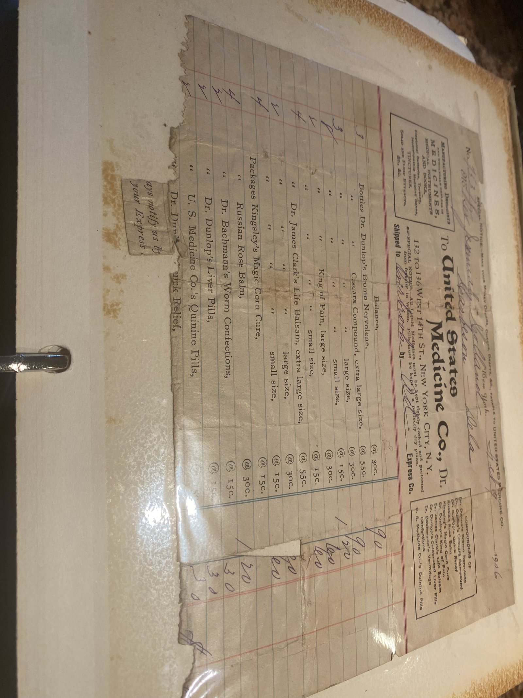
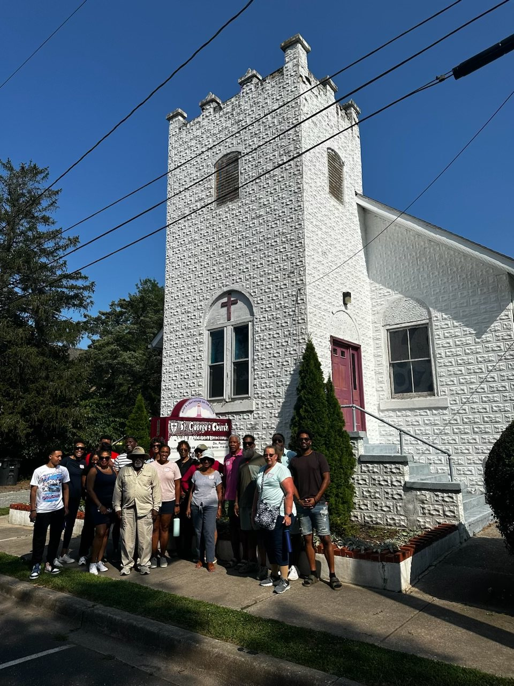
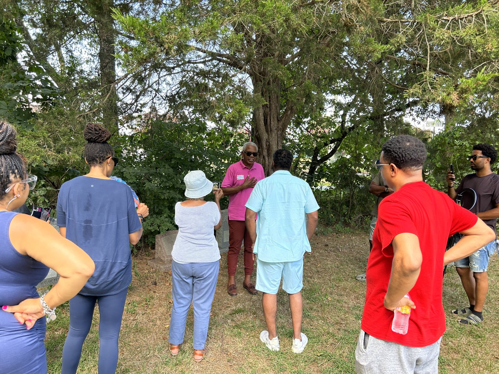
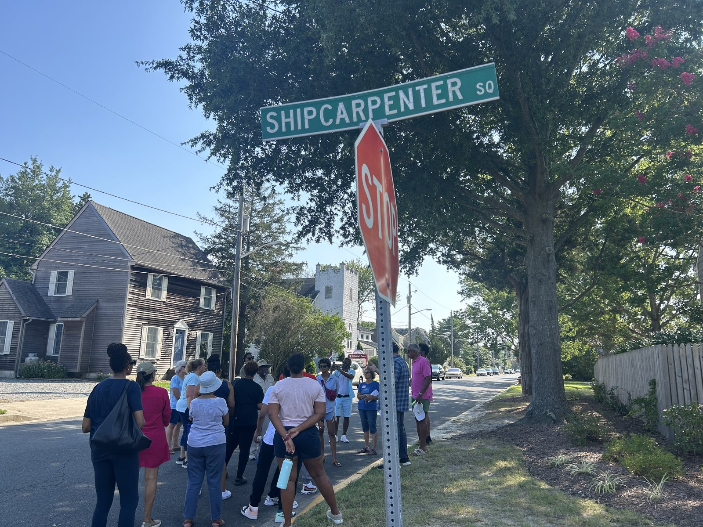
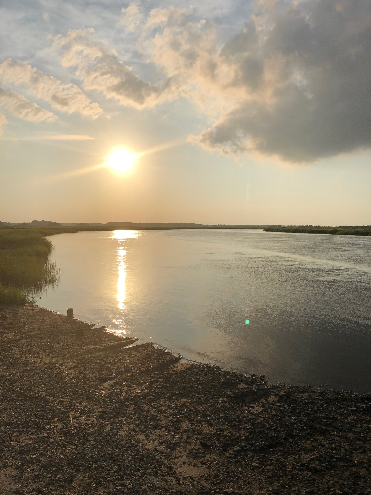

The paper trail and the photo album behind this history — freedom records, census pages, portraits, and moments from family reunions and history tours in Lewes.
The primary sources behind the family history — wills, freedom papers, census pages, and school and land records, gathered over years of research.



Faces from the family archive, and the written history itself.


Moments from Holland family reunions and history tours around Lewes and Sussex County.






The land at Oysterrocks and the waters of the Broadkill River and Delaware Bay that shaped the family's story.
